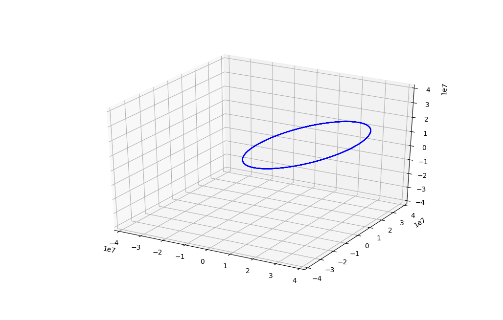

This is my example script¶
Docstring for this example
1 2 3 4 5 6 7 8 9 10 11 12 13 14 15 16 17 18 19 20 21 22 23 24 25 26 27 28 29 30 31 32 33 34 35 36 37 38 39 40 41 42 43 44 45 46 47 48 49 50 51 52 53 54 55 56 57 58 59 60 61 62 63 64 65 66 67 68 69 70 71 72 73 74 75 76 77 78 79 80 81 82 83 84 85 86 87 88 89 90 91 92 93 94 95 96 97 98 99 100 101 102 103 104 105 106 107 108 109 110 111 112 113 114 115 116 117 118 119 120 121 122 123 124 125 126 127 | #!/usr/bin/env python
'''
'''
from pyod import RadarPair
from pyod import PropagatorOrekit
from pyod import OptimizeLeastSquares
from pyod import SourceCollection
from pyod import SourcePath
from pyod.plot import orbits, residuals
from pyod.datetime import mjd2npdt
from pyod.coordinates import geodetic2ecef
from pyod.sources import TrackletSource
import pathlib
import numpy as np
import matplotlib.pyplot as plt
orekit_data = '/home/danielk/IRF/IRF_GITLAB/orekit_build/orekit-data-master.zip'
prop = PropagatorOrekit(
orekit_data = orekit_data,
settings=dict(
in_frame='ITRF',
out_frame='ITRF',
drag_force=False,
radiation_pressure=False,
)
)
state0 = np.array([-7100297.113,-3897715.442,18568433.707,86.771,-3407.231,2961.571])
t = np.linspace(0,1800/(3600*24),num=10)
mjd0 = 54952.08
dates = mjd2npdt(mjd0 + t)
params = dict(A= 0.1, m = 1.0)
r_err = 1e3
v_err = 1e2
ski_ecef = geodetic2ecef(69.34023844, 20.313166, 0.0)
kar_ecef = geodetic2ecef(68.463862, 22.458859, 0.0)
# rx_list = [ski_ecef, kar_ecef]
rx_list = [ski_ecef]
source_data = []
for rx in rx_list:
data = dict(
date = dates,
date0 = mjd2npdt(mjd0),
params = params,
tx_ecef = ski_ecef,
rx_ecef = rx,
)
radar = RadarPair(data, prop)
sim_data = radar.evaluate(state0)
radar_data = np.empty((len(t),), dtype=TrackletSource.dtype)
radar_data['date'] = dates
radar_data['r'] = sim_data['r'] + np.random.randn(len(t))*r_err
radar_data['v'] = sim_data['v'] + np.random.randn(len(t))*v_err
radar_data['r_sd'] = np.full((len(t),), r_err, dtype=np.float64)
radar_data['v_sd'] = np.full((len(t),), v_err, dtype=np.float64)
source_data.append({
'data': radar_data,
'meta': dict(
tx_ecef = ski_ecef,
rx_ecef = rx,
),
'index': 1,
}
)
paths = SourcePath.from_list(source_data, 'ram')
sources = SourceCollection(paths = paths)
sources.details()
variables = ['x', 'y', 'z', 'vx', 'vy', 'vz']
dtype = [(name, 'float64') for name in variables]
state0_named = np.empty((1,), dtype=dtype)
true_state = np.empty((1,), dtype=dtype)
start_err = [5e3]*3 + [1e2]*3
for ind, name in enumerate(variables):
state0_named[name] = state0[ind] + np.random.randn(1)*start_err[ind]
true_state[name] = state0[ind]
input_data_state = {
'sources': sources,
'Model': RadarPair,
'date0': mjd2npdt(mjd0),
'params': params,
}
post = OptimizeLeastSquares(
data = input_data_state,
variables = variables,
start = state0_named,
prior = None,
propagator = prop,
method = 'Nelder-Mead',
options = dict(
maxiter = 10000,
disp = True,
xatol = 1e1,
),
)
post.run()
print(post.results)
print('True error:')
for var in variables:
print('{:<3}: {:.3f}'.format(var, (post.results.MAP[var][0] - true_state[var][0])*1e-3))
orbits(post, true=true_state)
residuals(post, [state0_named, true_state,post.results.MAP], ['Start', 'True', 'MAP'], ['-b', '-r', '-g'], absolute=False)
residuals(post, [state0_named, true_state,post.results.MAP], ['Start', 'True', 'MAP'], ['-b', '-r', '-g'], absolute=True)
plt.show()
|
Outputs¶
PropagatorOrekit instance @ -9223363265289739155:
-------------------------
Integrator : DormandPrince853
Minimum step : 0.001 s
Maximum step : 120.0 s
Position Tolerance : 10.0 m
Input frame : ITRF
Output frame : EME
Gravity model : HolmesFeatherstone
- Harmonic expansion order (10, 10)
Atmosphere model : DTM2000
Solar model : Marshall
Constants : WGS84
Included forces:
- radiation pressure
- drag force
- earth gravity
- perturbation Moon
- perturbation Sun
Third body perturbations:
- Moon
- Sun